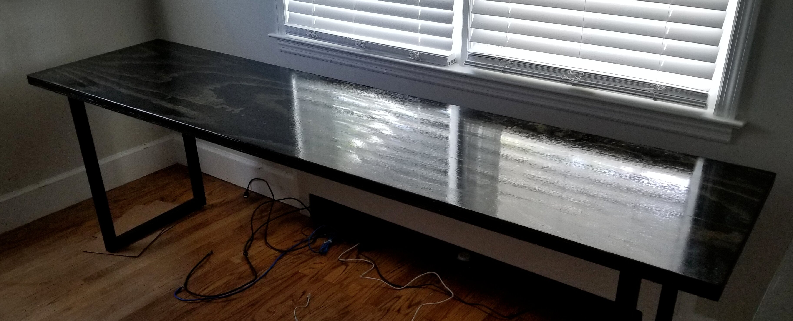

June 22nd, 2020
Hello World! I have been busy during the last few weeks of May. I switched to Linux on my main laptop, decided to start a new desktop build, began building my new desk, and wrote new firmware to my 3D Printer!
During finals week I had run into so many Windows workflow errors it had driven me crazy. I had vowed to switch from Windows permanently from that point on after I had finished all of my finals. I have been using Linux on and off for the past few years. My server, goldwater, has been running Linux for awhile now and I think a full Linux setup would best suit my workflow. Right now on my Thinkpad T460s I am running Ubuntu 20.04 and I have installed ArchLabs on my new Ryzen build, Grant.
My old desk setup consisted of two crummy $100 desks from Amazon and it worked for awhile. I had gotten to the point where I required something better and I wanted to free up some space in my room. My dad and I built a desk with metal tube legs he bought on Amazon and a sheet of plywood cut down the middle. We laminated the two pieces of plywood together after splitting it down the middle to make a desk that is 2’ x 8’ and 1 ¾” thick. I finished it with ebony stain and three coats of polyurethane. 
My desktop build centers around a Ryzen 5 3600 and an RX560. I bought a 250GB NVME SSD along with 16GB of RAM. I am running ArchLabs on it and I have decided to make the hostname Grant, after President Ulysses S. Grant. I name all of my PCs after US Presidents and all of my network devices after US Senators. I bought a new miniATX case, but it wasn't compatible with my RX560. I took the new case I bought and transferred the internals of goldwater into it. Grant, the new PC, will be residing in goldwater's old ATX case.
I updated the firmware on my Monoprice Maker Select V2 as well as added a bootloader to the Arduino inside so I can update it on the fly. I think I might have broken the LCD as it isn't showing anything on it, but the active buzzer on the board it is attached to is still working. I will likely control the printer with Octoprint as I did before.
Over and out, Richard
© 2020 - Richard Martino